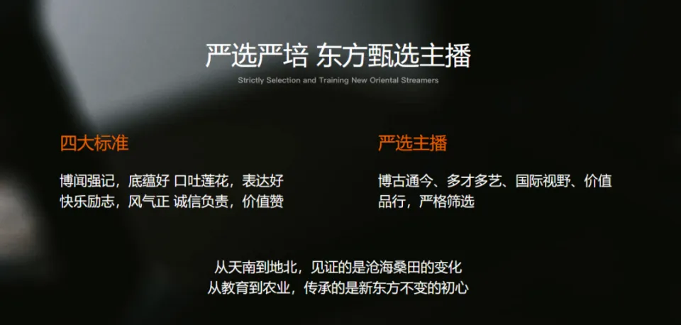

东方甄选究竟要成为哪一种公司
“众人拾柴火焰高”，本来是一句形容团结力量大的谚语，但对处于舆论漩涡中的东方甄选而言，更像是一种反向操作——CEO俞敏洪、已经“独立”的头部主播董宇辉、仍然在向“顶流”角色努力的其他主播们，依次添了一把柴，将这家公司变成了一口越烧越旺的油锅。
整个6月，东方甄选风波不断：温声细语的知识型带货被“嚎叫式”直播取代，形成强烈反差；俞敏洪做客物美集团创始人张文中的直播间，称“东方甄选现在做得乱七八糟”，随后股价连日下挫；董宇辉为文旅事业四处奔走，却在一档节目中吐露了“非常抗拒卖东西”的心声，称自己“到今天都不享受这个工作”；主播顿顿公开吐槽公司，表达了对后者未与主播沟通就开设新账号、公关部门不作为等行为的不满；另一位主播明明由于使用“山河破碎”一词讲解贵州地形，不仅引发了巨大的争议，也让东方甄选旗下主播区别于其他同行的“文化内涵”备受质疑。
一位东方甄选员工认为，如今公司的一举一动很容易被外界过度解读、断章取义，“有点什么情况就开始放大”。然而，最先起到放大作用的其实是东方甄选自己——导火索从直播间点燃，说出去的每一句话都如同回旋镖，比起伤人，更为伤己。
在东方甄选官网上，这家公司的自我认知是“致力于成为以农产品为内核的产品科技公司，为客户甄选生活好物的轻松愉快的文化传播公司”。但至少从现在来看，在整个电商行业的低价战争面前，所谓的“产品科技”壁垒的建立仍然需要时间，而理想状态下的“轻松愉快”已经不复存在。
“乱七八糟”与“山河破碎”
这把火是一步一步烧起来的。
618大促期间，一些东方甄选的粉丝发现，他们所熟悉的直播间“变了”，曾经温文尔雅、不紧不慢的直播风格，被“嚎叫式”“吆喝式”的带货话术取代，“您都来了，买一单再走吧”和“321，上链接”此起彼伏，有人不客气地形容为“过去是发光，现在是发霉”。
官方吐槽的威力远远大于受众批评。在与物美集团创始人张文中的直播对谈中，当对方提及带货经验的学习与探讨时，俞敏洪称“东方甄选现在也做得乱七八糟，没有任何向你提建议的本领”。此言一出，“俞敏洪称东方甄选做得乱七八糟”登上微博热搜，东方甄选的股价也连续几个交易日下跌，市值蒸发超过43亿港元。直至俞敏洪发布公开信，“为这样不严谨的表达”向东方甄选的客户、股东和投资者道歉，股价才开始回升。
接下来的日子还算平静，只有董宇辉在一档节目中的言论激起了些许波澜。他说，他很反感被称作“网红”，非常抗拒“卖东西”，“到今天都不享受这个工作”——他可能从中获得了成就感和支撑意义，却没有喜悦和快乐。
同样不快乐的，大概还有东方甄选美丽生活直播间的当家主播顿顿（本名王若顿）。他在6月底的一场直播中提到，自己对公司最近的一些做法比较恼火——开启全新的服饰矩阵账号，却没有提前和主播商量；网络舆情出现后，公司公关部门“怕这怕那”“这不管那不管”。“以前很长一段时间都觉得公司挺好的，说实话，这段时间是真的对公司有一点失望。”
这些毫不遮掩的表达，最终化作了微博热搜上的“东方甄选主播直播间公开表达不满”词条。在一位顿顿粉丝的印象里，这是他为数不多在镜头前表露出负面情绪的时刻。但不是所有人都会为此感到理解和心疼，一位抖音用户的评论可以作为一种参考：“你很长一段时间觉得公司挺好的，那是因为宇辉罩着你们，那时候我就想，总有一天你们会明白宇辉的重要性。”
与此同时，另一位主播明明（本名石明）需要面对的是更为复杂的局面。在贵州肇兴侗寨，他以“山河破碎”形容当地地貌，再加上主播YOYO对高温天气、蜘蛛外形的调侃，让一场文旅宣传变成了一次“游客劝退”。尽管明明在道歉声明中解释，这是查找资料时阅读到的表述，完全没有“别有用心”和“刻意为之”，而且因为边走边讲、未能及时更正而引起了后续的误会，网友却并不买账，贵州文旅官方也已经删除了与东方甄选相关的所有视频。
6月29日，东方甄选发布声明，直指最近的风波为“有组织的造谣抹黑”，称“从来没找政府要过宣传费，也坚持不向任何企业、商家收入所谓坑位费用”，并附上了一张被打上“谣言”标签的截图。在“谣言”中，董宇辉是“老师”，俞敏洪是“老头”，东方甄选是“隔壁”，这就如同在滚烫的油锅中倒水，无论是董宇辉的“丈母娘们”还是东方甄选的粉丝，都炸了——在俞敏洪转发此条声明的抖音评论区，两万条回复里，“丈母娘们”甩出了东方甄选粉丝群内对董宇辉进行人身攻击的截图，东方甄选的粉丝在呼吁俞敏洪一碗水端平。两方甚至难得地达成了一致：“俞老师，赶紧报警啊！”
产品公司还是MCN机构？
按照东方甄选在财报中的描述，这家公司对自身的定位是“做一个专注于为客户细心甄选优质产品的直播电商平台；一家以持续提供‘东方甄选’自营农产品为核心产品的优秀产品和科技公司；以及一家为客户提供愉快体验的文化传播公司”，直播是其链接生产者与消费者的主要形式。
有别于多数带货直播间大喊大叫、简单粗暴的销售手段，从直播伊始，东方甄选的主播们就以一篇又一篇声情并茂的“小作文”将商品特点与产地、背景娓娓道来，进而建立了独特的直播间风格。卖大米时，董宇辉从“长白山皑皑的白雪”讲到“十月田间吹过的微风”；卖火锅底料时，顿顿提到了古人的饮食、《飞鸟集》和《诗经》；卖苹果时，YOYO在白板上写下“the apple of my eye”的英文板书；卖虾仁时，明明以光学知识解决钓虾问题……“文化直播”逐渐成为东方甄选的标签。
东方甄选对主播的要求存在“四大标准”——“博闻强记，底蕴好；口吐莲花，表达好；快乐励志，风气正；诚信负责，价值赞”，进入直播间的主播需要经过“博古通今、多才多艺、国际视野、价值品行”的严格筛选。

标准只承担了门槛作用，却难以预设上限。在董宇辉之后，东方甄选并没有打造出与之相当的“顶流”主播，而“小作文”事件的发生，则加剧了彼此之间的割裂。直播带货离不开流量，对一家MCN机构而言，达人、主播、网红是台前的IP，更是幕后的流量池。截至发稿，“与辉同行”直播间成立半年，抖音粉丝数量已经超过2050万，董宇辉个人抖音账号的粉丝数量为2581万。对比之下，东方甄选抖音粉丝数量为3001万，与今年年初相比，已经减少了140万以上。
时至今日，和自营产品相比，东方甄选更为知名的IP依然是主播，但在屡次陷入舆论漩涡、情绪撕扯背后，它显然未能有效地平衡IP个人化、流量集中化与商业价值品牌化之间的关系，导致管理问题在直播间的场景被进一步放大。
这是每一家MCN机构都无法回避的问题，但东方甄选绝不是只想以MCN机构的角色存在。除了继续培养新生主播、开设不同品类的账号矩阵，这家公司将目光投向了多元化业务，分摊流量风险。2022年下半年以来，东方甄选先后尝试了上线独立App、多平台同步进行直播，推出付费会员体系，涉足小时达业务等举措。
东方甄选财报显示，截至2023年11月30日止的六个月内，其自营产品数量超过264个；GMV（成交额）达到57亿元，来自抖音的GMV占“绝大部分”。与此同时，“三费”均呈现不同程度的增长，其中销售与营销开支达到5.6亿元，同比增长145.6%。
从业务版图的延展来看，东方甄选正在努力摆脱直播依赖，加强上下游供应链的布局。这里的问题在于，直播才是其差异化竞争的关键。受限于当前业务规模和销售体量，东方甄选在价格竞争与选品供应方面并不具备绝对优势——无论是和它所对标的山姆，还是正在低价中厮杀的传统电商平台相比。
一切最终都要落回到业绩上。飞瓜数据显示，与辉同行以5.73亿元的销售额位列2024年6月抖音带货达人榜第二位； 广东夫妇和贾乃亮分列第一位、第三位；东方甄选没有进入前十，排名第十一位。按照从属关系，与辉同行隶属于东方甄选旗下，收入计入东方甄选，但在实际执行的过程中，两者已经是相对独立运行的团队，受众区分度极高。
换句话说，在当前这个阶段，东方甄选缺少的是合力，主播需要充分的价值认可和完善的激励机制，品牌需要建立足够深厚的壁垒以应对随时发生的变化——能力再出众，分散是大忌。而被粉丝反复喊话“一碗水端平”、作为CEO的俞敏洪，也应该下定决心回答，东方甄选究竟要成为一家怎样的公司？